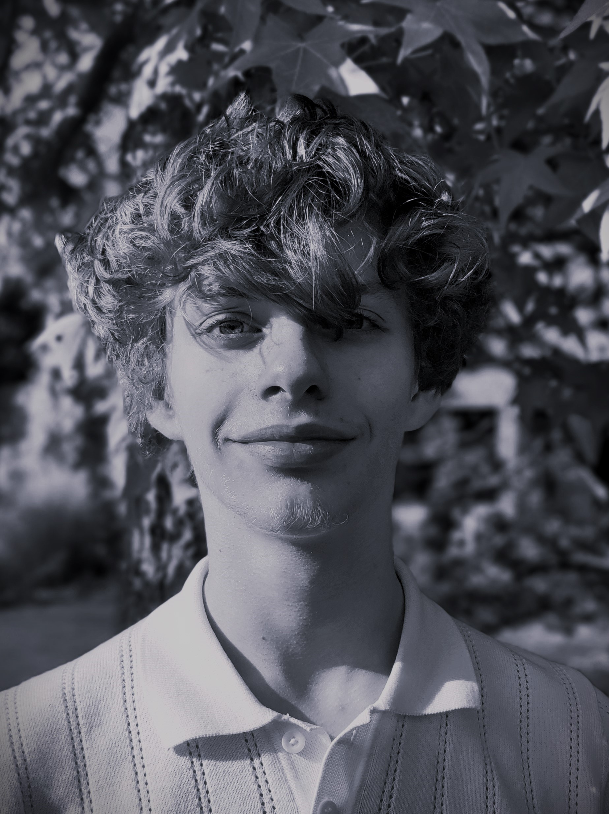

First-year student at IESEG School of Management, Lille.
I learn by doing.
I value concrete strategies and real results over abstract speculation.
Still figuring out where I'm headed, taking it day after day.

My choices reflect who I am today and what I believe in even if it's bound to evolve. Theory doesn't interest me much, even if I know it's the foundation of all.
I've built projects from scratch. Not because I knew everything, but because I wanted to try. Curiosity I would say is what defines me the most.
Real estate photography business launched in 12th grade. I provided virtual tour services to real estate agencies shooting, editing, delivering.
Video editing project I did in 10th and 11th grade. Offered editing services to clients while learning Adobe Premiere.
Web design service for businesses. Designed and delivered websites for local clients, managing the process with my business partners from brief to delivery.
I chose my phone specifically because it's one of the best photophones on the market. I like to always have a great camera no matter where I am or when.
See my shotsSomething about riding a motorbike on a warm summer day just hits different. Even if I don't have my license yet.
It's simply not possible to live without it, in any of its forms.
Find me online
César Vissouze · IESEG School of Management · Lille, France